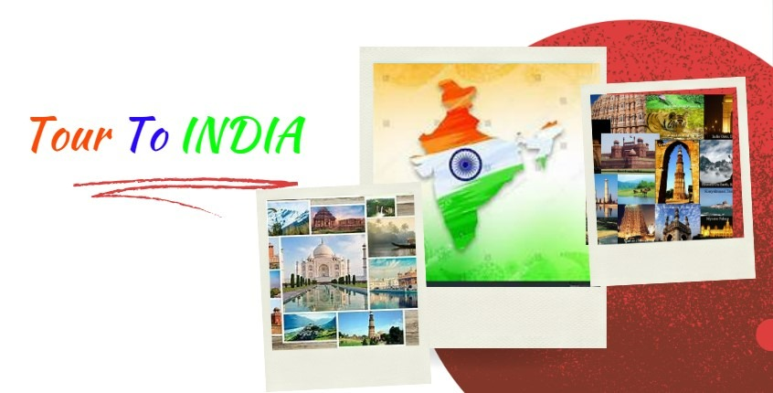

Title: Explore Incredible India: A Journey Through Diverse Packages
India, a land of diverse cultures, landscapes, and experiences, beckons travelers from around the globe with its myriad attractions.
From the snow-capped peaks of the Himalayas to the sun-kissed beaches of Goa, from the bustling streets of Delhi to the serene backwaters of Kerala,
India offers something for every traveler. Let’s embark on a journey through India's various travel packages, each offering a unique glimpse into this incredible country.
1. Golden Triangle Tour:
The Golden Triangle Tour encompasses three iconic cities: Delhi, Agra, and Jaipur. Begin your journey in Delhi, the capital city, where history and modernity blend seamlessly.
Explore the magnificent Mughal architecture of Agra, including the breathtaking Taj Mahal, a UNESCO World Heritage Site. Finally, experience the vibrant culture and royal heritage of Jaipur,
known as the Pink City, with its majestic forts, palaces, and bustling bazaars.
2. Himalayan Adventure:
For the adventure enthusiasts, the Himalayan Adventure package offers thrilling experiences amidst breathtaking scenery. Trek through lush forests, across meadows adorned with wildflowers,
and alongside gushing rivers. Discover the spiritual ambiance of ancient monasteries nestled in the Himalayan foothills. Whether it’s trekking in Himachal Pradesh,
exploring the pristine beauty of Uttarakhand, or experiencing the tranquility of Sikkim, the Himalayas promise an unforgettable adventure.
3. Goa Beach Retreat:
Indulge in sun, sand, and relaxation with a Goa Beach Retreat. With its palm-fringed beaches, lively shacks, and vibrant nightlife, Goa is the ultimate destination for beach lovers.
Spend your days lounging on the golden sands, trying water sports, or exploring the Portuguese heritage in charming towns like Old Goa. As the sun sets, immerse yourself in the
pulsating rhythms of Goan music and dance under the starlit sky.
4. Kerala Backwaters Cruise:
Experience serenity on a Kerala Backwaters Cruise, drifting along tranquil waterways lined with swaying palm trees and lush greenery. Board a traditional houseboat, known as a kettuvallam,
and journey through the enchanting backwaters of Alleppey and Kumarakom. Marvel at the picturesque landscapes, visit quaint villages, and savor delicious Kerala cuisine prepared
on board. It’s a journey that promises relaxation, rejuvenation, and a deeper connection with nature.
5. Rajasthan Cultural Expedition:
Step back in time and immerse yourself in the rich cultural heritage of Rajasthan. Explore magnificent forts, opulent palaces, and intricately carved temples that bear witness to the state’s
royal legacy. Wander through the narrow lanes of ancient cities like Udaipur, Jodhpur, and Jaisalmer, each boasting its own unique charm
and architectural marvels. Don’t miss the chance to witness vibrant folk performances, colorful festivals, and traditional Rajasthani cuisine.
6. South India Temple Tour:
Delve into the spiritual heart of South India with a Temple Tour that takes you to some of the region’s most revered religious sites. Visit the majestic temples of Tamil Nadu, renowned for their
towering gopurams, intricate carvings, and Dravidian architecture. Explore the ancient ruins of Hampi in Karnataka, a UNESCO World Heritage Site
steeped in history and mythology. From the bustling streets of Chennai to the tranquil shores of Kerala, this journey offers a glimpse into the spiritual diversity of South India.
India’s diverse landscapes, rich cultural heritage, and warm hospitality make it a traveler’s paradise. Whether you’re seeking adventure in the mountains, relaxation on the beaches, or immersion in history and culture, India has it all.
So pack your bags, embark on a journey of discovery, and let the magic of India captivate your soul. As the saying goes, “Atithi Devo Bhava” – the guest is truly treated like a god in India.